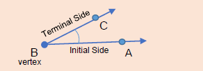
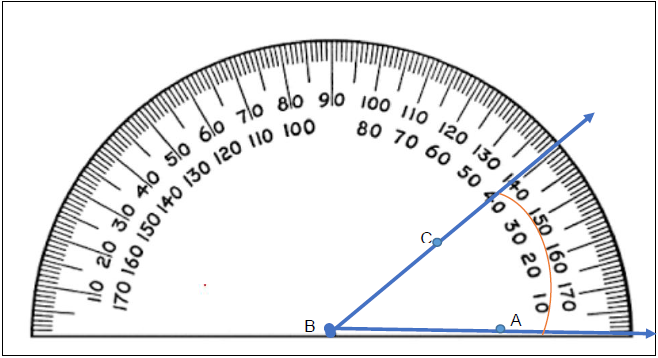
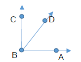
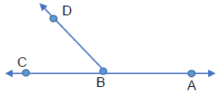

Chapter 5: Geometry
Section 5.1: Points, Lines, and Angles
Learning Objective(s)
- Measurement of Angles
- Supplementary and Complementary Angles
Points and Lines
Geometry is the area of mathematics that deals with shapes, angles, and planes. In this chapter we will look primarily at triangles and angles. First we need to talk about the building blocks that make up angles.
A point is a small dot that has no distinct length, width, or thickness. A line connects two points and continues through both points indefinitely — it also has no distinct length, width, or thickness. Putting these together we get a line segment, which connects exactly two points with a definite length, and a ray, which is like a half-line — it starts at one point and continues through the other indefinitely.
| Name | Symbolic Notation | Picture |
|---|---|---|
| Point | \(A\) | |
| Line | \(\overleftrightarrow{AB}\) | |
| Line Segment | \(\overline{AB}\) | |
| Ray | \(\overrightarrow{AB}\) |
Angles
An angle is created by combining two rays joined at a common point called a vertex. Every angle has an initial side, which is where the angle begins, and a terminal side, which is where the angle ends.

When it comes to measuring angles, we measure them in degrees. Degrees are based on a total of 360°, which represents a full circle or full rotation. We can measure angles using a protractor. To measure an angle, line up the center dot of the protractor with the vertex of the angle, and align the bottom line with the initial side of the angle, as shown in Figure 5.1 below.

Figure 5.1 — Using a protractor to measure \(\angle ABC = 40°\)
Supplementary and Complementary Angles
When the sum of two angles equals 90°, the two angles are called complementary angles. When the sum of two angles equals 180°, the two angles are called supplementary angles.
Example 1
Find the missing angle. \(\angle ABD = 62°\). Find \(\angle DBC\).

Solution
\(\angle ABC = 90°\), which means \(\angle ABD\) and \(\angle DBC\) are complementary angles and \(\angle ABD + \angle DBC = 90°\).
\[90° = 62° + \angle DBC\] \[\angle DBC = 90° - 62° = 28°\]\(\angle DBC = 28°\)
Example 2
\(\angle ABD = 112°\). What is the measure of \(\angle DBC\)?

Solution
Since \(\overleftrightarrow{AC}\) is a straight line, \(\angle ABC = 180°\), making \(\angle ABD\) and \(\angle DBC\) supplementary angles.
\[\angle ABD + \angle DBC = 180°\] \[112° + \angle DBC = 180°\] \[\angle DBC = 180° - 112° = 68°\]\(\angle DBC = 68°\)
Self Check A
If \(\angle ABD\) and \(\angle DBC\) are complementary angles and \(\angle DBC = 47°\), find \(\angle ABD\).
\(\angle ABD = 43°\)
Self Check B
If \(\angle ABD\) and \(\angle DBC\) are supplementary angles and \(\angle ABD = 127°\), find \(\angle DBC\).
\(\angle DBC = 53°\)
Summary
A point has no size, a line extends infinitely in both directions, a line segment connects two endpoints, and a ray starts at one point and extends infinitely in one direction. An angle is formed by two rays sharing a common vertex, measured in degrees using a protractor. Two angles whose measures sum to 90° are complementary; two angles whose measures sum to 180° are supplementary.